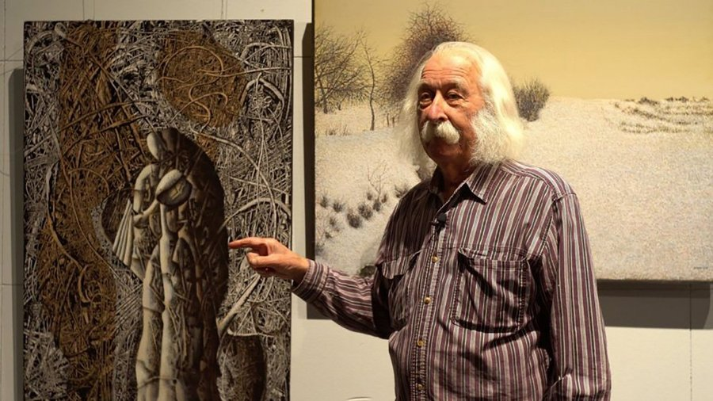
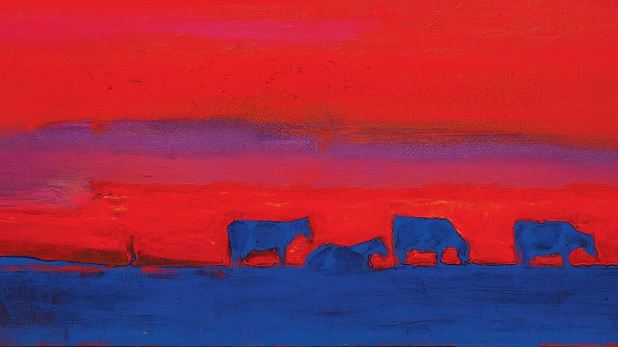
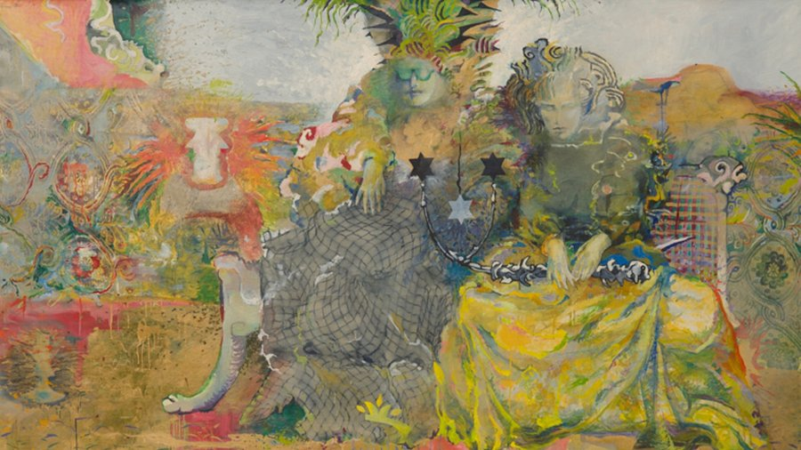
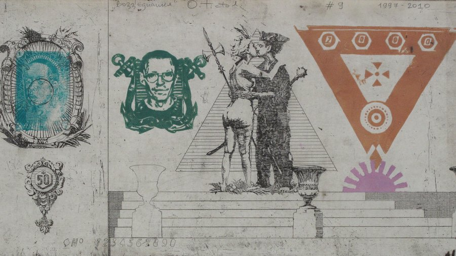
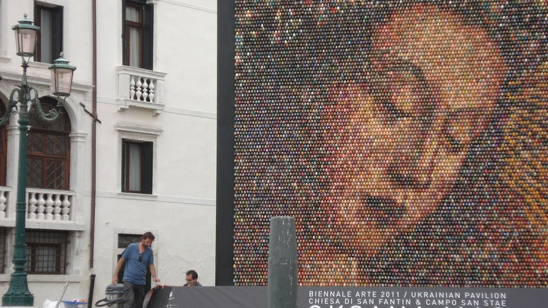

Іван Марчук
"Дайте мені тисячу років – я розмалюю небо і не повторюся!", – Іван Марчук
Іван Марчук – відомий художник, патріарх авангарду, легенда українського живопису, геній, який створив близько 5 000 робіт, відкрив понад 150 монографічних та 50 колективних виставок і придумав свій власний стиль "пльонтанізм" (походить від українського слова "пльонтати" – плести).
Його роботи знаходяться у музеях на п'яти континентах. Марчук потрапив до списку "100 найкращих живих геніїв", складеного британською газетою Daily Telegraph. Міжнародна академія сучасного мистецтва в Римі прийняла його до Золотої гільдії (до якої входить 51 художник зі всього світу) та обрала почесним членом наукової ради академії. Однак міжнародному визнанню передували тривалі напади депресії та заборонені виставки у колишньому СРСР.
Іван Марчук на 24tv
Анатолій Криволап
Анатолій Криволап – український живописець, майстер нефігуративного живопису та пейзажу. Один із найвідоміших і найдорожчих (за версією журналу Forbes) художників українського сучасного мистецтва.
Його роботи можна побачити у найкращих музейних та приватних колекціях світу. У 2013 році картину Криволапа "Кінь. Вечір" було продано в Лондоні за $186 тис. У 2016 році Анатолій Криволап заснував іменну премію для молодих художників у розмірі $5 тис. (стипендіати отримують не гроші, а квиток на літак, оплату готелю та вхідних квитків у найкращі музеї світу).
Доволі тривалий час Криволап проводив експерименти з кольором, аби потім знищити усі ці експериментальні полотна. Проте з час він почав новий етап художньої кар’єри, підкоривши нову уявну вершину і знайшовши свій характерний стиль – експресивні пейзажі, написані яскравими фарбами на великих полотнах. Як зізнається сам художник, перш за все його надихають фарба і стосунки з природою.
Анатолій Криволап, "Вечір".
Ілля Чичкан
Ілля Чичкан – епатажний український художник, чиї роботи виставлялися у Музеї сучасного мистецтва у Нью-Йорку, а також у галереях та музеях Європи, Південної та Північної Америки. Найдорожчу картину Чичкана "ІТ" ("Воно") продали на аукціоні Philips de Pury за $70 тис.
У 1990-х роках його ім'я було пов'язане з рухом митців під назвою "Нова Хвиля" – локальним українським проявом мистецтва трансавангарду (це один із напрямків у мистецтві раннього постмодернізму), який з'явився як реакція на ключові соціально-політично-культурні зміни, що настали з початком реформ "перебудови" 1985-1991 років. Працює в різних жанрах: живопис, фотографія, інсталяція, відео.
Роботи художника виставлялися у провідних галереях та музеях Європи, США та Південної Америки, а також брали участь у престижних міжнародних форумах та фестивалях сучасного мистецтва – бієнале у Сан-Паулу (1996), бієнале сучасного мистецтва в Йоганнесбурзі (1997), Празькій бієнале (2003), Белградській бієнале (2004), європейській бієнале Manifesta (2004), а також Венеційській бієнале (2009).
Ілля Чичкан, "Коханки Кирила"
Олег Тістол
Олег Тістол – один із найуспішніших українських митців на світовому артринку, чиї роботи неодноразово представлялися на провідних світових бієнале сучасного мистецтва та таких знаменитих аукціонах як Bonhams, Christie's, Phillips, Sotheby's.
Представляв країну на бієнале мистецтв у Сан-Паулу у 1994 році та 49-й Венеційській бієнале у 2001 році. Відмінною особливістю робіт Олега Тістола є художнє переосмислення різних кліше та стереотипів шляхом експериментів.
Один із них був зроблений у співпраці з дизайнеркою Анастасією Івановою у 2013 році, коли відвідувачі 31-го Українського тижня моди брали участь у розмальовуванні роботи "Книжка-розмальовка", створюючи таким чином інтерактивний витвір мистецтва.
Олег Тістол, серія "Українські гроші"
Оксана Мась
Оксана Мась – художниця, філософиня, гуманістка, урбаністка, теоретикиня та популяризаторка сучасного мистецтва. Народилася 1969 року в Україні. Наразі проживає та працює в Іспанії у місті Фігейрасі.
Брала участь у 54-ій Венеційській бієнале (з сольним проєктом, представляла Україну), у 55-ій Венеційській бієнале, у 65-му Фестивалі кіномистецтва в Локарно, на бієнале "Жінки та мистецтво" у Шарджі, ОАЕ, та у численних Art Basel Miami (Маямі, США), Frieze (Лондон, Великобританія), FIAC (Париж), ARCOmadrid (Мадрид, Іспанія), The Armory Show (Нью-Йорк, США), Art Dubai (Дубай, ОАЕ).
Роботи Оксани продаються на аукціонах Sotheby's, Christie's та Phillips і перебувають в музейних та приватних колекціях, таких як Stella Art Foundation, Фонд BREUS, колекція Joerg Bongartz, Сімейний художній музей Sorelouzos, Capital Group Art Фонд, Фонд , колекції Віктора Пінчука та Віктора Бондаренка
Оксана Мась, проєкт “Post vs Protorenessans”.